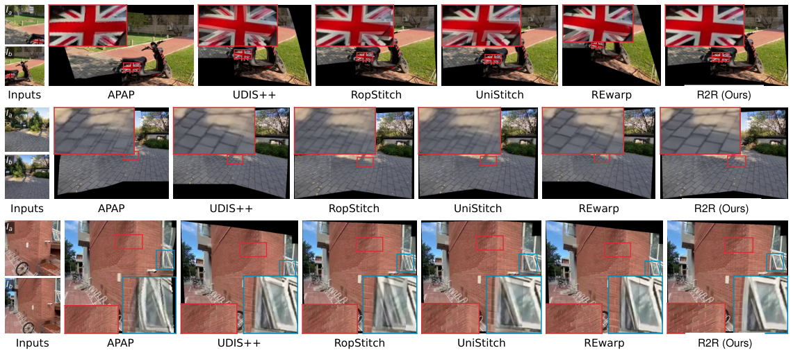
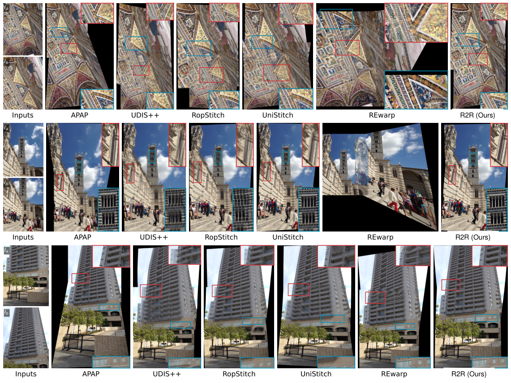

Preprint · Published 2026-11-20
Rematch to Refine: Alignment-Aware Correspondence Aggregation for Image Stitching
1 Nankai University2 Guangxi University3 Tiangong University4 Beihang University
Abstract
Initial nonlinear alignment reduces large displacements in parallax-tolerant image stitching, yet local misalignment can persist. Pre-alignment also reshapes local matching neighborhoods and their sampling support, making correlation strength alone insufficient to interpret candidate correspondences. We propose Rematch to Refine (R2R), a bilateral refinement framework that reconstructs and aggregates correspondence evidence using sampling validity and spatially aligned context. Our Alignment-Aware Correspondence Aggregation (AACA) module jointly encodes bidirectional local correlations and candidate sampling validity, distinguishing low similarity from missing sampling support. Aligned same-view context then guides multiscale aggregation, providing surrounding structural cues to disambiguate local correspondences. The aggregated evidence predicts bilateral residual corrections that compose with the initial mappings to produce the final alignment. To strengthen the initial alignment, Content-Adaptive Geometry Injection (CAGI) enriches point-based geometric representations with image content. Experiments demonstrate that R2R achieves state-of-the-art average alignment performance in terms of mPSNR and mSSIM on both UDIS-D and Classic.
Method overview

Qualitative results
Original figures from the paper. Open any figure at full size to inspect the labeled comparisons.


Paper files
Both PDFs contain the main paper and references only (10 pages), without supplementary material. The web PDF preserves searchable text, equations and vector graphics, with compressed photographic images. For detailed visual comparisons, use the high-resolution PDF.